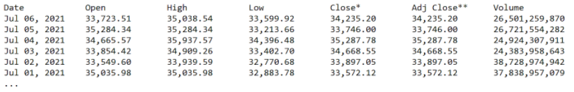
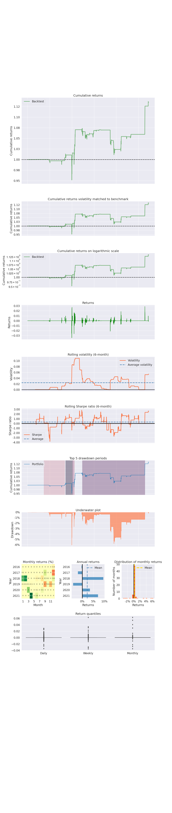
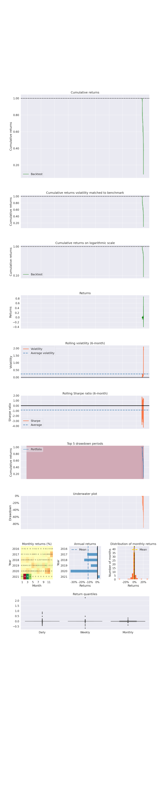

Introduction & Background
Today, the world of finance feels like it moves at lightspeed. Billions of bits, dollars, and transactions are exchanged every second. Money and our relationship with it are changing every day and there is no better example of this than Bitcoin.
With such high throughput, it is nearly impossible for an average human to track all the price changes that Bitcoin goes through. We thus heavily rely on computers to generate most trade instructions. In fact, automated computer trading has become so prevalent that the U.S. Securities and Exchange Commission estimates that roughly 80% of all trades are executed by computer-powered algorithms. [1]
Problem Definition
Transactions occur too fast for humans to identify trends and respond to them correctly. Our team's objective is to use machine learning to efficiently perform sentiment and technical analysis on Bitcoin, recognize trends, and execute trades to generate portfolio growth and exceed the performance of simply holding Bitcoin over a timeframe. We will be using natural language processing for sentiment analysis and supervised/unsupervised machine learning for technical analysis. We will be using a Python library called Backtrader to facilitate portfolio and broker management.
Data Collection
Sentiment Data Collection & Preprocessing
Five datasets were used to train the sentiment analysis model. The datasets are as follows:- ABC World News Headlines from 2014-2020
- Reddit World News Headlines from 2016-2020
- CNBC Financial News Headlines from 2017-2020
- Guardian Financial Headlines from 2017-2020
- Reuters Financial Headlines from 2018-2020
These datasets were obtained as .csv files from kaggle.com. Each dataset was read into a pandas dataframe. The dataframes were preprocessed and later merged into a single training dataframe to be used in supervised learning.
Originally, all the datasets had “Time”, “Headlines”, and “Description” columns. For the pre-processing step, a python script was written to clean each .csv file. In each script, the headline dates were formatted into the proper datetime index format. All punctuation and numerical values from the headlines were removed. Any headlines sharing the same date were concatenated into a single string. The “Description” column was removed because the model was to be trained on the news headlines only.
Technical Data Collection & Preprocessing
The technical data source was Yahoo Finance. The official Yahoo Finance API was discontinued a few years ago, but it is still being widely supported and is popular in algorithmic trading. With the Yahoo Finance API for Python and the DataFeeds functionality in Backtrader, we were able to download Bitcoin data in the following format: 
This was convenient as the data could easily be downloaded as a .csv file and read into a pandas dataframe. This also made the data persistent and meant that we did not need to do any cleaning or pre-processing.
Methods
We plan to divide the project into two parts: a sentimental analysis model and a technical analysis model.
Sentiment Analysis Model
Bitcoin’s market value is largely driven by “hype” and speculative interest, creating uncertainty for many investors. However, sentiment analysis allows us to manage this uncertainty and quantify the public sentiments toward Bitcoin.The sentiment analysis model will be trained using supervised learning to generate a sentiment score for financial news headlines. [2] The training dataset will include an archive of headlines from ABC, Reddit, CNBC, the Guardian, and Reuters. Each headline in the dataset will be labeled with a positive or negative integer based on Bitcoin’s corresponding price change. Given a news headline, the sentiment analysis model will be able to accurately predict Bitcoin’s price change and put trades behind its predictions.
Technical Analysis Model
The technical analysis model will use standard market indicators (e.g. Moving averages, MACD, and Bollinger Bands) as features to determine the optimal position for the trader to be in. These indicators will provide data on a continuous range, as opposed to a discrete range. This will not only tell the technical analysis model if an indicator is active or not, but also how strong it is. We plan to normalize the data before feeding it to the model. [3]Combined Model
The sentiment analysis model and the technical analysis model will be combined in such a way that if they agree on a course of action, the trader will take that action. If they disagree on a course of action, the trader will either liquidate its positions or take no action. [2][3]Results & Discussion
Sentiment Analysis Model
The sentiment analysis model was trained using supervised learning. The five training datasets were merged into a single training dataframe. Each headline in this dataframe was labeled “-1” or “1”, depending on whether bitcoin’s price fell or rose in the next week. The model used support vector machines from the sklearn library. For implementation, a simple tokenizer function was written to tokenize each headline into a list of words. Our model was trained over five separate training and testing ranges.The primary metric used to score the sentiment analysis model was the f1 score. The f1 score is a harmonic mean of the model’s precision and recall. A high f1 score indicates a low false positive rate and low false negative rate.
The sentiment analysis model was trained and tested over five different time ranges.
The first training range was September 2014 to January 2016. The testing range was the year 2016. Over this testing range, the model achieved an overall accuracy of 60%. Sklearn report:
Training Range: 9-17-2014 to 1-1-2016 / Testing Range: 1-2-2016 to 12-31-2016
| precision | recall | f1-score | support | |
|---|---|---|---|---|
| -1 | 0.36 | 0.27 | 0.31 | 121 |
| 1 | 0.68 | 0.76 | 0.72 | 243 |
| accuracy | 0.60 | 364 | ||
| macro avg | 0.52 | 0.52 | 0.51 | 364 |
| weighted avg | 0.57 | 0.60 | 0.58 | 364 |
The second training range was September 2014 to January 2017. The testing range was the year 2017. Over this testing range, the model achieved an overall accuracy of 75%. This increased accuracy would prove to be very useful at the time we integrated our sentiment and technical analysis models. Sklearn report:
Training Range: 9-17-2014 to 1-1-2017 / Testing Range: 1-2-2017 to 12-31-2017
| precision | recall | f1-score | support | |
|---|---|---|---|---|
| -1 | 0.38 | 0.06 | 0.10 | 86 |
| 1 | 0.77 | 0.97 | 0.86 | 277 |
| accuracy | 0.75 | 363 | ||
| macro avg | 0.58 | 0.51 | 0.48 | 363 |
| weighted avg | 0.68 | 0.75 | 0.68 | 363 |
The third training range was September 2014 to January 2018. The testing range was the year 2018. Over this testing range, the model achieved an overall accuracy of 36%. This was a notable drop in accuracy. Sklearn report:
Training Range: 9-17-2014 to 1-1-2018 / Testing Range: 1-2-2018 to 12-31-2018
| precision | recall | f1-score | support | |
|---|---|---|---|---|
| -1 | 0.46 | 0.03 | 0.05 | 230 |
| 1 | 0.36 | 0.95 | 0.52 | 133 |
| accuracy | 0.36 | 363 | ||
| macro avg | 0.41 | 0.49 | 0.29 | 363 |
| weighted avg | 0.42 | 0.36 | 0.22 | 363 |
The fourth training range was September 2014 to January 2019. The testing range was the year 2019. Over this testing range, the model achieved an overall accuracy of 44%. This was a slight increase in accuracy. Sklearn report:
Training Range: 9-17-2014 to 1-1-2019 / Testing Range: 1-2-2019 to 12-31-2019
| precision | recall | f1-score | support | |
|---|---|---|---|---|
| -1 | 0.41 | 0.80 | 0.55 | 152 |
| 1 | 0.56 | 0.19 | 0.28 | 211 |
| accuracy | 0.44 | 363 | ||
| macro avg | 0.49 | 0.49 | 0.41 | 363 |
| weighted avg | 0.50 | 0.44 | 0.39 | 363 |
The fifth and final training range was September 2014 to January 2020. The testing range was the year 2020. Over this testing range, the model achieved an overall accuracy of 61%. This was a great increase in accuracy. Sklearn report:
Training Range: 9-17-2014 to 1-1-2020 / Testing Range: 1-2-2020 to 12-31-2020
| precision | recall | f1-score | support | |
|---|---|---|---|---|
| -1 | 0.38 | 0.29 | 0.33 | 119 |
| 1 | 0.69 | 0.77 | 0.73 | 241 |
| accuracy | 0.61 | 360 | ||
| macro avg | 0.54 | 0.53 | 0.53 | 360 |
| weighted avg | 0.59 | 0.61 | 0.60 | 360 |
Overall, the sentiment analysis portion of the project was successful. We observed high f1 scores of 75% over 2017, 61% over 2020, and 60% over 2016. where there was relative stability in the cryptocurrency market. The slump in accuracy in 2018 and 2019 was likely due to Bitcoin’s volatility following Bitcoin’s first bull run at the end of 2017. We also observed that the model was better at predicting price increases over price decreases. This is likely due to the fact that Bitcoin’s price had an overall positive trend from 2016 to 2020. In training, the model likely mapped most word vectors to price increases. Therefore, when Bitcoin’s price decreased in the testing range, the model had lower accuracy, as it was trained to map word vectors to a price increase.
Technical Analysis Model
Data is fetched from Yahoo Finance and structured into a pandas/backtrader dataframe. A check is also performed to see if the desired data already exists on file and collects this data instead. If it is not present locally, the data is downloaded, otherwise it is simply read in from a file. This data is relatively clean already. The data is trained using sklearn BayseianRidge regression methods. Multiple models are run at a time using the different features (high,low, close, open, volume) from the Bitcoin dataframe presented above. This model then predicts the next price data for the given length provided. We use Backtrader indicators to make trading decisions and in order to make use of this data we extract the data from the indicators into dataframes. The extracted data is then fed into the simulated broker (cerebro) and iterated over. The indicators being used are Exponential Moving Average (EMA) and Bollinger-Bands (BB). Cerebro is the simulated broker that will facilitate the buying/selling of Bitcoin and calculate commissions. Cerebro is also capable of executing fractional share trades. The sentiment analysis portion of the project is also incorporated as an indicator.
Initial tests of our technical analysis model were promising. The machine learning strategy consistently achieved higher profits compared to the non machine learning strategy over multiple validation ranges. With a $100,000 initial investment, these were our results:
Training Range: 2014-1-1 to 2016-12-31 / Validation Range: 2017-1-1 to 2019-12-31
| Profit | ROI | |
|---|---|---|
| ML | $11252.06 | 11.25% |
| Non ML | $-34151.99 | -34.15% |
Training Range: 2014-1-1 to 2015-12-31 / Validation Range: 2016-1-1 to 2021-6-20
| Profit | ROI | |
|---|---|---|
| ML | $13532.49 | 13.53% |
| Non ML | $-55935.55 | -55.94% |
Training Range: 2014-1-1 to 2020-12-31 / Validation Range: 2021-1-1 to 2021-6-20
| Profit | ROI | |
|---|---|---|
| ML | $11391.60 | 11.39% |
| Non ML | $-19393.93 | -19.39% |
In all three validation ranges, the machine learning strategy consistently achieved higher profits and rates of return compared to the non-machine learning strategy.
In order to further understand the predictive accuracy of the technical analysis model, the Root Mean Squared Error values were calculator for the three validation ranges. The results are shown below:
Training Range: 2014-1-1 to 2016-12-31 / Validation Range: 2017-1-1 to 2019-12-31
| RMSE | R2 Score | |
|---|---|---|
| Top Bollinger Band | 184.26444394884894 | 0.9980517959296775 |
| 20-Day Moving Average | 73.62847530906953 | 0.9995284125539151 |
| Bottom Bollinger Band | 164.21945972755142 | 0.9964272331088015 |
| Closing Price | 695.6085991023549 | 0.9587325905674069 |
Training Range: 2014-1-1 to 2015-12-31 / Validation Range: 2016-1-1 to 2021-6-20
| RMSE | R2 Score | |
|---|---|---|
| Top Bollinger Band | 342.1590941440107 | 0.9994323877733057 |
| 20-Day Moving Average | 186.86660934498934 | 0.9997726464124513 |
| Bottom Bollinger Band | 307.6827745720516 | 0.9991500796328655 |
| Closing Price | 1251.0641374217896 | 0.9901372811259308 |
Training Range: 2014-1-1 to 2020-12-31 / Validation Range: 2021-1-1 to 2021-6-20
| RMSE | R2 Score | |
|---|---|---|
| Top Bollinger Band | 778.2982762267994 | 0.9892454238701909 |
| 20-Day Moving Average | 405.51782736035796 | 0.9968194638932137 |
| Bottom Bollinger Band | 808.0445726345929 | 0.9906568923442578 |
| Closing Price | 3662.666692120174 | 0.8222124682031661 |
The results indicate that the technical analysis model is very accurate at predicting the values of the bollinger bands and the 20-day moving average. It is not as accurate at predicting the closing price, as we calculated much higher Root Mean Squared Error values. The reason for this is likely due to the fact that the closing price is far more volatile and unpredictable. Meanwhile, the moving average and bollinger bands more stable and more easily predictable, as they smooth out the fluctuations in the closing price.
The machine learning strategy was tested against the non machine learning strategy. Machine learning metrics were run on both, and we found that the machine learning strategy outperformed the non-machine learning strategy in terms of daily, weekly, monthly, annual, and cumulative returns. The machine learning strategy also minimized losses during periods of drawdown. The comparison between the machine learning strategy (on the left) versus the non-machine learning strategy (on the right) is shown below.
|  |  |
Combined Model
The technical and sentiment analysis models were integrated together to create our trading strategy.In our strategy, the trader enters a position based on the technical analysis model. The trader checks the sentiment every 14 days. On evaluation, if the previous sentiment evaluation was shown to be incorrect, that is, the price of bitcoin did not move as predicted, the trader will exit its current position and check again on the next bar. If the sentiment has shown to be correct and the new sentiment prediction matches the old prediction, the trader will increase the size of its current position. If the previous sentiment has shown to be correct and the current sentiment does not match the previous sentiment, the trader will reverse its position.
We ran our strategy over 2016, 2017, 2018, 2019, and 2020 and tested it against a strategy using random sentiment evaluation. The comparison between our strategy (on the left) versus the random sentiment strategy (on the right) for each of the five years is shown below.
In 2016, our model ended with a balance of $131412.33 after commissions were paid to the brokerage. Meanwhile, the random sentiment model ended with a balance of $40,328.66.

|

|
In 2017, our model ended with a balance of $1492812.55 after commissions were paid to the brokerage. Meanwhile, the random sentiment model ended with a balance of $142.00.

|

|
In 2018, our model ended with a balance of $49251.31 after commissions were paid to the brokerage. Meanwhile, the random sentiment model ended with a balance of $40524.79.

|

|
In 2019, our model ended with a balance of $-13037.66 after commissions were paid to the brokerage. Meanwhile, the random sentiment model ended with a balance of $96064.58.

|

|
In 2020, our model ended with a balance of $536860.64 after commissions were paid to the brokerage. Meanwhile, the random sentiment model ended with a balance of $10399.43.

|

|
Our strategy outperformed the strategy employing random sentiment by a considerable margin. It increased the original investment of $100,000 by 1400% in 2017, 500% in 2020, and 13% in 2016. In 2018 and 2019 however, the strategy lost money. This makes sense, as the sentiment analysis model was not very accurate for 2018 and 2019. Overall, we believe that combining technical and sentiment analysis together in our strategy was a success.
Conclusion
The sentiment analysis model helped us classify word vectors generated from news headlines to predict Bitcoin’s price changes. Achieving accuracy rates of 60%, 75%, 36%, 44%, and 61% in 2016, 2017, 2018, 2019, and 2020 respectively, we were amazed by how accurately the model was able to predict Bitcoin’s price change in each given year. We believe that the low accuracies in 2018 and 2019 are due to increased volatility in those years.
The technical analysis model helped us predict the future values of the price moving average, bollinger bands, and closing price of Bitcoin. This allowed us to determine the best buy and sell points for Bitcoin. Achieving high profits and low RMSE values in our predictions, we found the model to be very accurate. We determined that the higher RMSE value for closing price was due to the increased volatility of the closing price, compared to the smoother moving average and bollinger bands.
Finally, the integration of sentiment and technical analysis into a single strategy was a great success. Having a 1400% rate of return in 2017, a 500% rate of return in 2020, and a 13% rate of return in 2016, this strategy outclassed the non-machine learning strategy by a considerable margin.
After reviewing our findings, we believe that machine learning is a remarkable tool in sentiment and technical analysis. It helps us manage the uncertainty surrounding Bitcoin, and helps us identify trends that human traders cannot see.
On a personal note, we learned a lot about machine learning in this project, and we had a ton of fun working on it. Thank you so much!
References
[1] Staff of the U.S. Securities and Exchange Commission (August 5, 2020) “Staff Report on Algorithmic Trading in U.S. Capital Markets”, Available at: https://www.sec.gov/files/Algo_Trading_Report_2020.pdf (Accessed: Monday, June 7, 2021).
[2] Abraham, Jethin; Higdon, Daniel; Nelson, John; and Ibarra, Juan (2018) "Cryptocurrency Price Prediction Using Tweet Volumes and Sentiment Analysis," SMU Data Science Review: Vol. 1 : No. 3, Article 1.Available at: https://scholar.smu.edu/datasciencereview/vol1/iss3/1 (Accessed: Thursday, June 10, 2021).
[3] Shah, D., & Zhang, K. (2014, October). Bayesian regression and Bitcoin. https://devavrat.mit.edu/wp-content/uploads/2017/11/Bayesian-regression-and-Bitcoin.pdf (Accessed: Thursday, June 10, 2021).
Team Members
- Ben Podrazhansky
- Dylan Kynoch
- Atharva Desai
- Nicholas Oyebanji